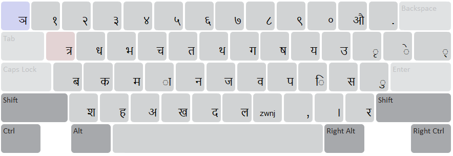
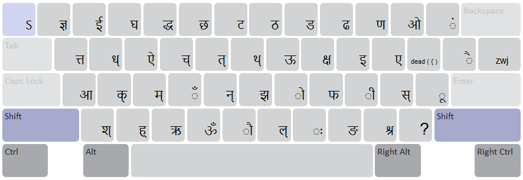

Start Using Nepali MPP Traditional
Authentic Nepali Traditional keyboard layout conforming strictly to the official Madan Puraskar Pustakalaya (MPP) & Language Technology Kendra (LTK) specification.
For desktop
Normal State

Shift State

Conjunctive Characters & Ligatures
In accordance with the MPP/LTK specification, common complex conjuncts are directly accessible:
- ! (Shift+1): ज्ञ
- $ (Shift+4): द्ध
- q: त्र | Q (Shift+q): त्त
- W (Shift+w): ड्ढ
- R (Shift+r): द्व
- T (Shift+t): ट्ट
- Y (Shift+y): ठ्ठ
- I (Shift+i): क्ष
- [: र् (Reph) | { (Shift+[): ृ (Matra Ri)
- S (Shift+s): ङ्क
- D (Shift+d): ङ्ग
- G (Shift+g): द्द
- : (Shift+;): ट्ठ
- Z (Shift+z): क्क
- X (Shift+x): ह्म
- N (Shift+n): द्य
- m: ः (Visarga) | M (Shift+m): ड्ड
- ? (Shift+/): रु
- =: Zero-Width Joiner (ZWJ, U+200D) | + (Shift+=): Zero-Width Non-Joiner (ZWNJ, U+200C)